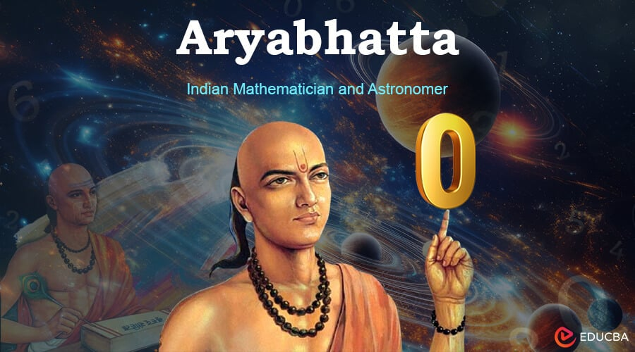

Born: 476 AD ----- Died: 550 AD
Aryabhatta is the father of Indian Mathematics who significantly contributed to mathematics and astronomy and discovered many theories.
He was born in 476 AD, Pataliputra, Gupta Dynasty
which people also considered the gold age of India. He died in 550 AD. In his only surviving work, Aryabhatta covered a wide range of
topics such as extracting square roots,
solving quadratic equations, and predicting eclipses.
----------------------------------------------------------------------Contributions to mathematics----------------------------------------------------------------------
- Discovering an approximation of pi by following the following rule in his book, add four to 100, multiply by 8 and then add 62,000. This calculation results in 3.1416, which is close to the actual value of pi, 3.14159. Aryabhatta's approximation was the most accurate among the ancients.